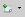

Стиль — это совокупность свойств форматирования для различных объектов документа.
В LibreOffice имеется пять типов стилей: абзаца, символа, страницы, врезки и списка. Каждый тип стиля отвечает за элементы оформления, присущие только ему. По своему устройству стили разных типов не пересекаются. Исключение составляют только стили Абзаца и Символа. Оба эти типа содержат настройки шрифтов.
Основное назначение стилей, это упрощение процесса оформления документа. Вместо того, чтобы каждый раз задавать множество параметров таких, как шрифт, кегль, выравнивание и т.д. Можно один раз прописать эти параметры в стиле и далее задавать документу только стили. Это существенно ускоряет процесс оформления. А задавая стили заголовков можно упростить и процесс автоматического создания оглавлений.
Меню выбора стилей находится рядом с настройками шрифта.
Либо клавишей «F11» можно вызвать меню «Стилей и форматирования».
Автоматическое оглавление формируется на основе стилей. Благодаря стилям LibreOffice определяет где заголовок, а где остальной текст.
В LibreOffice имеется набор стандартных стилей, однако у каждого пользователя свои предпочтения. Для создания собственных стилей необходимо открыть меню «Стилей и форматирования», «F11» или «Формат → Стили».
В меню имеется пять вкладок: стиль абзаца, символа, врезки, страницы, списка.
К примеру, для создания стиля страницы, необходимо перейти на вкладку «Стиль страницы» и щёлкнуть по списку правой кнопкой мыши и выбрать пункт «Создать». В открывавшемся меню можно задать название стиля и его параметры (поля, колонтитулы и прочее).
Аналогичные действия производятся для создания других стилей.
Шаблон — это документ, используемый в качестве основы для создания других документов, и содержащий определённые стили форматирования, текст, и другие объекты. Стили, созданные пользователям остаются только в том документе, в котором они созданы. Чтобы переместить эти стили в другой документ, а не задавать их по новой, используются шаблоны.
Чтобы создать шаблон, достаточно сохранить документ в формате .ott (Шаблон текстового документа ODF).
Но для того, чтобы была возможность импорта стилей в другие документы необходимо воспользоваться другим способом. После создания стилей надо перейти во вкладку «Файл → Шаблоны → Сохранить». В появившемся меню задать название шаблона и сохранить.
После создания шаблона вторым способом, в любом документе, в который нужно импортировать стили из него, надо открыть меню «Стилей и форматирования», нажать на значок  и выбрать пункт «Загрузить стили». В открывшемся меню надо выбрать шаблон и галочками отметить стили, которые нужно импортировать.
Совет
За дополнительной информацией и примерами обращайтесь к «Руководству по стилям LibreOffice»: http://librerussia.blogspot.ru/p/guides.html
{kind=link}
{kind=link}
{kind=link}